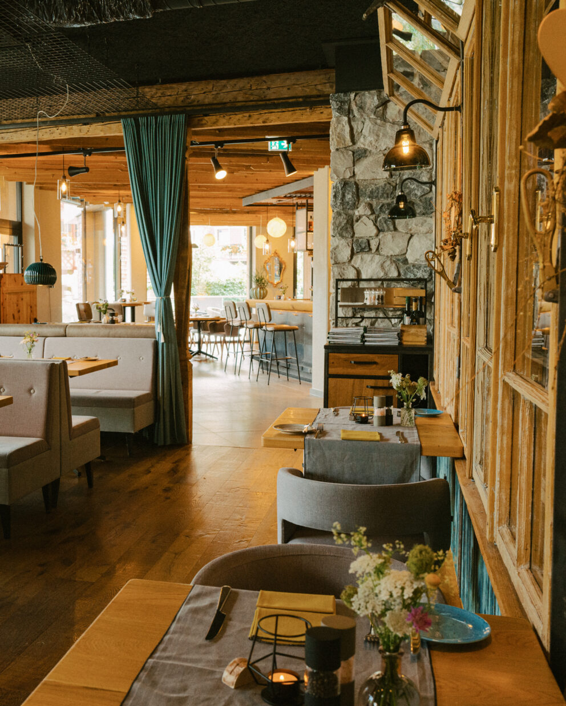
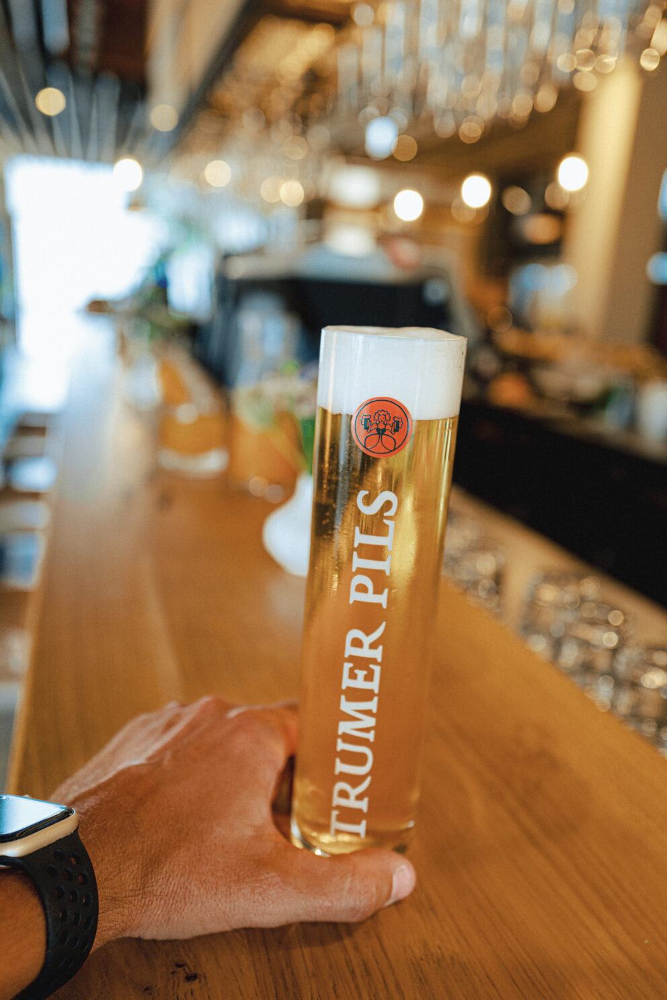
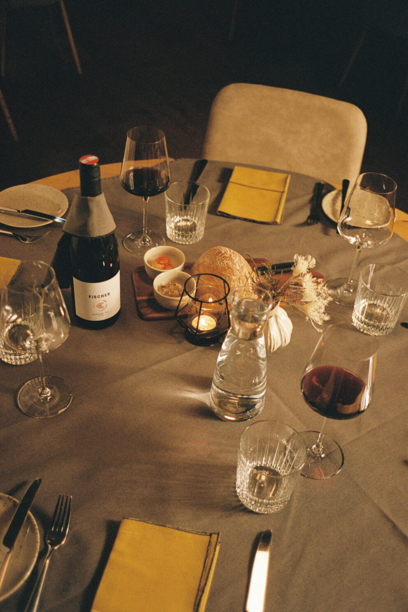
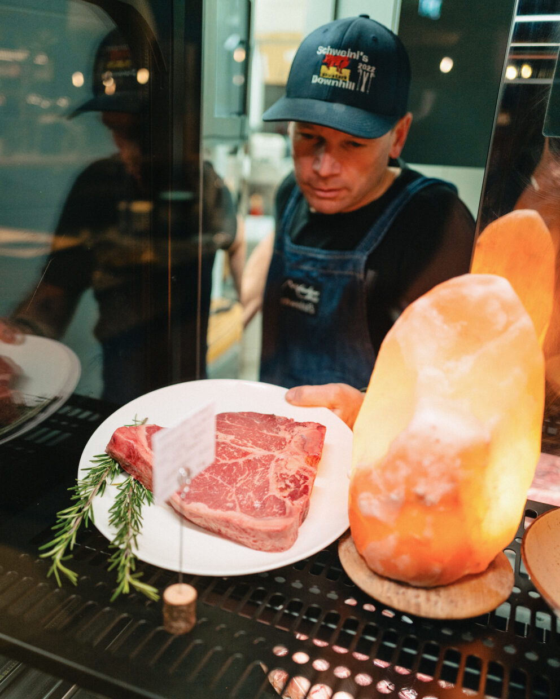
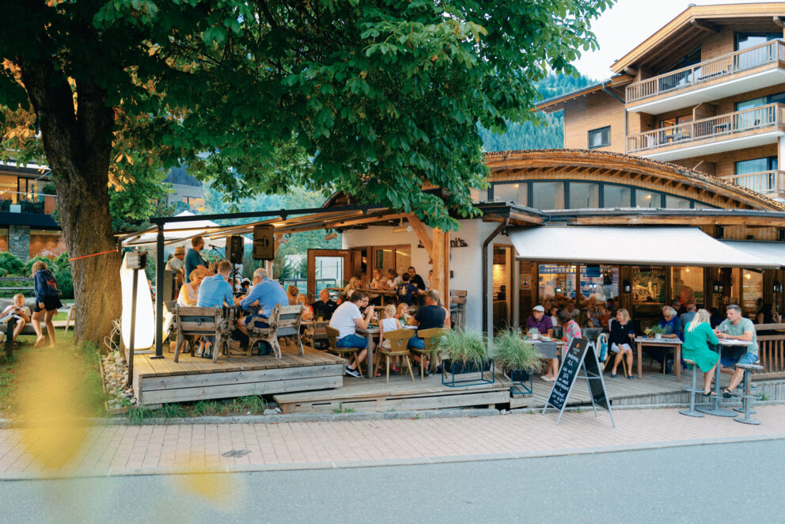
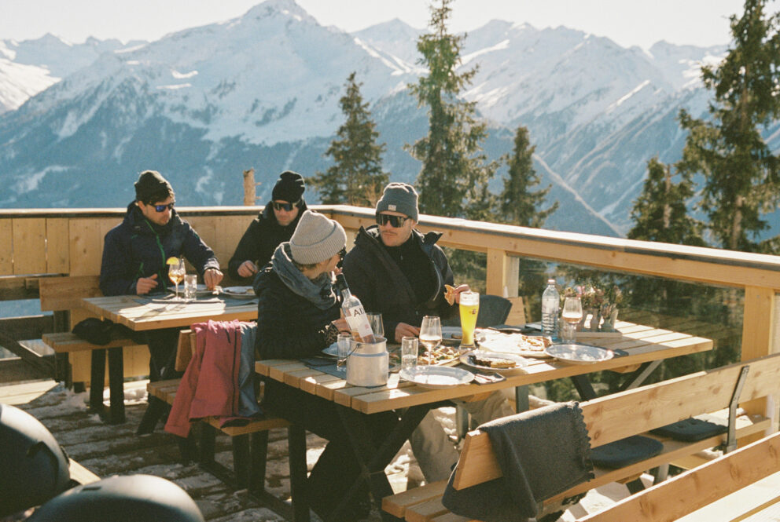

Traditionell, bodenständig, gschmackig – guat!
Selbst kochen oder sich im à la carte Restaurant verwöhnen lassen – Hotelgäste haben die Wahl! Wer in den gemütlichen „Venediger Stubn" einkehrt, bewegt sich zwischen gestern und heute.
Küchenchef Fritz und Seniorchefin Annelies Schweinberger stehen schon über 30 Jahre lang Schulter an Schulter am Herd. Gemeinsam führen Sie die beiden durch die traditionelle österreichische Küche. Frische und saisonale Produkte des Landes stehen hierbei im Mittelpunkt.
Reserviere rechtzeitig deinen Tisch, da die Nachfrage immer sehr groß ist.





Sonnenterrasse, Frische Drinks, Après Ski & Burgeria
Saustark – der Name ist Programm. Im Sommer bekommt das Après Ski Mekka ein komplettes Facelifting und wird untertags zum chilligen Treffpunkt für Biker, Bergsteiger und alle jung gebliebenen.
Die schöne Sonnenterasse, die gute Küche, das gute Service, die zentrale Lage sind nur ein paar Gründe dafür, dass hier immer was los ist.
SpeisekarteBar mit Geschichte. So simpel erklärt ist Schweinis Downhill.
Einst wie der Après Ski noch in den Kinderschuhen steckte, stand unsere kleine Schirm Bar mitten in Neukirchen. Über die Jahre würde es immer voller, lauter & turbulenter!
Direkt an der Talabfahrt Neukirchen neben der Talstation Gensbichlalm Lift finden Sie unsere gemütliche Bar, die Kulinarisch mit leckeren Flammkuchen eine Alternative zum klassischen „Ski Essen" bietet. Ein Platz, der die Leute durch die Einfachheit glücklich macht.
Speisekarte
Venediger Lodge · Marktstraße 64 · 5741 Neukirchen · Österreich